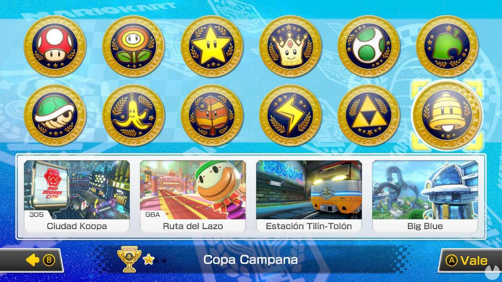

Disfruta de la emoción de las carreras con Mario y sus amigos en este emocionante juego de carreras de kart.
Copas
En los Grand Prix, existen cuatro copas habituales: Copa Champiñón (Mushroom Cup), Copa Flor (Flower Cup), Copa Estrella (Star Cup) y Copa Especial (Special Cup), y en algunas aumentan:
- Super Mario Kart Super Mario Kart: Presenta tres copas en 50cc, y la Copa Especial, que es desbloqueable, solamente en 100cc y 150cc. Se desbloquea pasando las tres copas primeras en el nivel de dificultad 100cc. Cada copa tiene 5 circuitos, haciendo un total de 20 circuitos.
- Mario Kart 64: Contiene 16 circuitos. Presenta las cuatro copas en 50cc, 100cc y 150cc. Introdujo un nuevo modo, llamado "Modo espejo" (Mirror Mode), que, en este juego, se le conoce como modo "Extra", el cual se desbloquea al pasar todas las copas en 150cc.
- Mario Kart: Super Circuit: Contiene 40 circuitos. 20 de los cuales son nuevos y los 20 restantes de Super Mario Kart. Presenta las cuatro copas en todos, con una nueva copa llamada "Copa Centella" (Lightning Cup), que se encuentra entre las copas Flor y Estrella. Para desbloquear la Copa Especial, se debe pasar con un rango aceptable las 4 copas anteriores. Además, no contiene el nivel de dificultad Extra.
- Mario Kart: Double Dash!!: Contiene 16 circuitos. Presenta las cuatro copas y una quinta copa llamada "Recopa" (All-Cup Tour). Esta última contiene todos los 16 circuitos, siempre empezando por Circuito de Luigi y terminando con Senda Arco Iris, mientras que los 14 circuitos restantes aparecen en orden aleatorio. Este juego contiene los niveles de dificultad 50cc, 100cc, 150cc y el modo Espejo, que es desbloqueable. Es el primer juego de la serie en presentar personajes y karts ocultos y el primer juego de la serie hasta la fecha en el que dos personajes van sobre un kart al mismo tiempo, mientras que uno conduce, el otro utiliza los objetos o los roba de otro oponente.
- Mario Kart DS: Las copas contienen dos modos: El Modo "Nitro", que son 16 circuitos nuevos y el modo "Retro" que son circuitos revividos de los 4 juegos anteriores, dando de nuevo la Copa Centella (Lightning Cup). El juego introduce otras tres, que son la Copa Caparazón (Shell Cup), la Copa Plátano (Banana Cup) y la Copa Hoja (Leaf Cup). Este juego da igual las pistas de 50cc, 100cc, 150cc y el desbloqueable Modo Espejo, que se llama 150cc Espejo.
- Mario Kart Wii: Las copas traen los mismos modos de juego, que son 50cc, 100cc, 150cc y el Modo Espejo, también las copas Nitro y copas Retro. Es el primer juego de la serie Mario Kart en el que se utilizan motos y también el primero en el que máximo pueden participar hasta 12 jugadores: hasta 4 controlados por personas y los 8 restantes controlados por el juego.
- Mario Kart 7: Las copas tienen los mismos modos. Son 50cc, 100cc, 150cc y Espejo. Se puede personalizar el kart, eligiendo armazones, neumáticos y las nuevas alas deltas que permiten volar durante algunos segundos. También se puede ir bajo el agua con unas hélices submarinas para todos. Tiene 8 personajes menos, pero hay 4 debutantes.
- Mario Kart 8: Tiene los mismos modos, que son 50cc, 100cc, 150cc y Espejo, así como elementos de Mario Kart 7 (volar con las alas deltas y e ir bajo el agua con las hélices submarinas). También se puede utilizar motos e introduce los quads. Pueden participar hasta 12 jugadores como en Mario Kart Wii, mientras que la nueva característica del juego es la revolucionaria forma antigravedad, para correr en las paredes o el techo. Es el primer juego de la serie Mario Kart en incorporar un nuevo nivel de dificultad llamado 200cc, que se consigue adquiriendo el segundo paquete descargable del juego.
- Mario Kart 8 Deluxe: Se trata de una mejora del juego de Mario Kart 8, conteniendo todos los personajes, elementos, cursos, incluso packs descargables (DLC) del título anterior. El juego trae de vuelta objetos que no han vuelto a aparecer en la serie como la Pluma y el Boo, nuevos personajes, como los inkling de la serie Splatoon y otros que quedaron fuera como Bowser Jr/Bowsy, Huesitos y Rey Boo. El modo de batalla Bob-ombardeo vuelve en este título y cada personaje puede obtener hasta dos objetos a la vez como sucedió en Mario Kart: Double Dash!!.
- Mario Kart Tour: Primer juego de Mario Kart lanzado como aplicación, Varios jugadores tratan de ganar carreras multijugador o arcade. Hay varios mundos arcade y personajes, alas deltas y karts que se pueden desbloquear a través de puntos que se consiguen en carreras. También hay ligas multijugador donde cada uno consigue puntos jugando arcade. Al ganar puntos en arcade se consigue subir de posición, y cada cierto tiempo, cuando la temporada termina, el jugador recibe los puntos y una bonificación por la clasificación. Este es el primer juego en incluir a personajes con diferentes vestimentas, vuelven a aparecer los objetos especiales de Mario Kart: Double Dash!! y objetos nuevos, los personajes pueden obtener de 1 hasta 3 objetos y si se obtienen 3 objetos iguales, se entra al estado furor, este es el juego de Mario Kart con más cantidad de personajes.

© 2023 Mario Kart 8 Deluxe. Todos los derechos reservados.